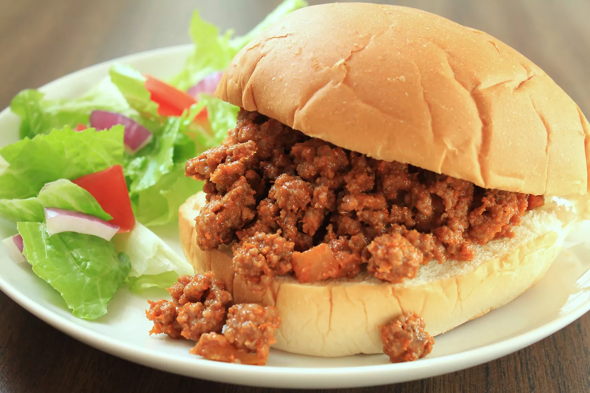

These crowd-pleasing Sloppy Joe sandwiches will take you back to your childhood! This is my mom's recipe and it always gets compliments! There's nothing quite like Sloppy Joes to satisfy your comfort food cravings. This crowd-pleasing Sloppy Joe recipe will make you nostalgic for simpler times. Plus, it comes together quickly with ingredients you likely already have on hand.
A Sloppy Joe is a sandwich consisting of ground beef and onions in a tomato-based sauce served on a hamburger bun.
The sandwich likely originated in Sioux City, Iowa in the 1930s. According to legend, the "loose meat sandwich" was the creation of a cook named Joe.
Step 1
Heat a large skillet over medium heat. Cook and stir lean ground beef in the hot skillet until some of the fat starts to render, 3 to 4 minutes. Add onion and bell pepper; continue to cook until vegetables have softened and beef is cooked through, 3 to 5 more minutes.
Step 2
Stir in ketchup, brown sugar, mustard and garlic powder; season with salt and pepper. Reduce heat to low and simmer for 20 to 30 minutes.
Step 3
Divide meat mixture evenly among hamburger buns.